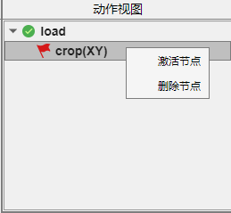

7.1 动作视图
动作视图 以操作树的形式记录您的“可保留动作”，包括 体积裁剪，帧裁剪，图像配准 及 细胞分割。红色🚩标记您当前正在浏览的节点（“已激活节点🚩”），新的“可保留动作”也将限制在该节点。
绿色✅标记表示“已激活节点🚩”的直接亲代（已自动加载或实时计算）。
您可以通过选中任意节点并单击右键，唤出操作菜单，如下图所示。

激活节点：这将激活您选中的节点，并使您当前工作目标自动移动到该节点。
删除节点：该操作将删除您选中的节点及其对应时间分支上所有子代。
注1：如果您当前“已激活节点🚩”已经存在子代，您的新增“可保留动作”将成为最近子代的兄弟(平行分支)。
注2：如果“已激活节点🚩”是您即将删除节点的子代，程序将在您删除节点时自动确定新的“已激活节点🚩”。
注3：删除节点 操作无法恢复，请谨慎操作。